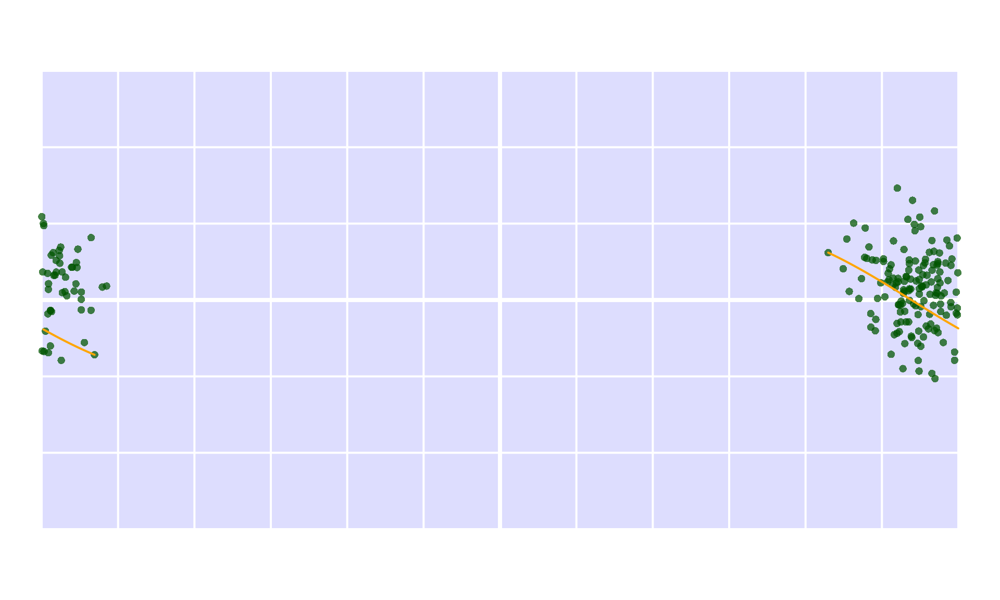
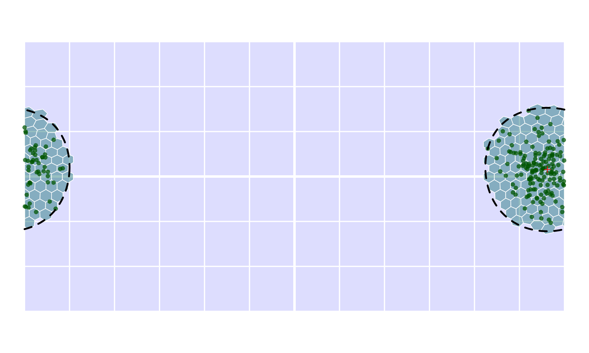
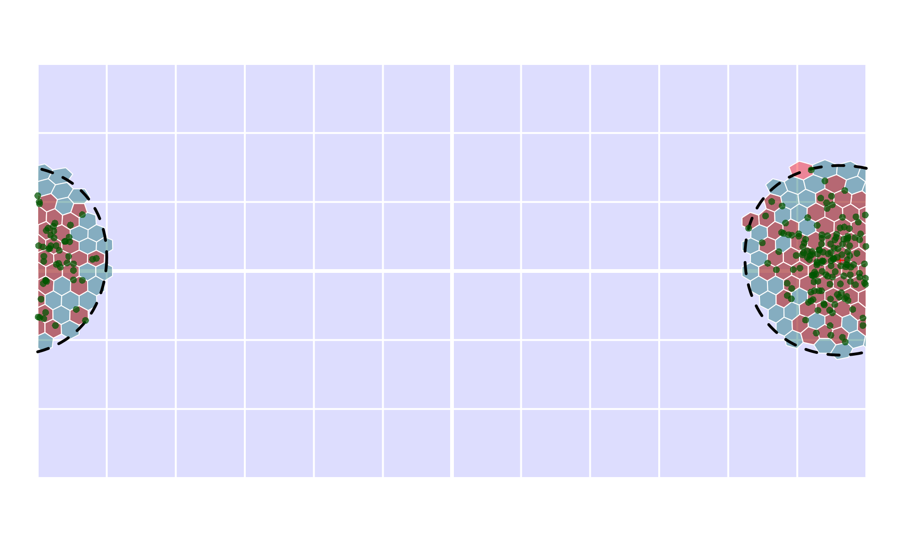

The orange extension was written to facilitate the calculation of distribution descriptors, especially in a spherical context, where many planar operations either do not work or work incorrectly. All computations in orange are executed in 3D space (never in projections), and are relying heavily on the icosa extension and the geometric operation within.
Illustration data
For the sake of this demonstration, we will use point distribution data which are generated from a Kent distribution (the spherical equivalent of a bivariate Gaussian distribution). The orange package has a bunch of samples generated from multiple such distributions for testing and similar demonstration purposes, which can be accessed with the kentsamples built-in data.
data(kentsamples)
str(kentsamples)
#> List of 16
#> $ central_s : num [1:1000, 1:2] 4.86 0.545 8.806 3.197 9.095 ...
#> $ central_m : num [1:1000, 1:2] 16.2 17.19 13.8 -18.53 8.26 ...
#> $ central_l : num [1:1000, 1:2] -109.75 -3.88 -34.68 -19.9 -59.34 ...
#> $ central_xl : num [1:1000, 1:2] -146.8 108.9 -33 -65.1 -51 ...
#> $ arctic_s : num [1:1000, 1:2] 127.7 24.2 -19.2 -29.8 146.3 ...
#> $ arctic_m : num [1:1000, 1:2] -151.8 -35.6 86.2 48.4 -91.9 ...
#> $ arctic_l : num [1:1000, 1:2] 124.8 145.9 -13.4 -16.7 125 ...
#> $ arctic_xl : num [1:1000, 1:2] -172.61 7.72 70.25 -142.23 -64.16 ...
#> $ antarctic_s : num [1:1000, 1:2] -6.21 80.03 71.41 21.58 -87.24 ...
#> $ antarctic_m : num [1:1000, 1:2] -41.1 169.7 -51.6 61.8 -73.6 ...
#> $ antarctic_l : num [1:1000, 1:2] -54.8 -119.3 -39.6 -152.3 22.3 ...
#> $ antarctic_xl: num [1:1000, 1:2] -98.2 108.6 75.1 47.1 46.4 ...
#> $ dateline_s : num [1:1000, 1:2] 167 177 158 174 173 ...
#> $ dateline_m : num [1:1000, 1:2] 179 177 157 180 163 ...
#> $ dateline_l : num [1:1000, 1:2] 177 -179 157 -180 -164 ...
#> $ dateline_xl : num [1:1000, 1:2] -1.29 -107.59 141.58 -150.18 -168.18 ...This built in data object has 16 1000-element samples of different concentrations, focusing on either the (0,0) longitude-latitude point, its almost antipodal (170,0), the arcic or the antarctic. To make the examples more convincing, we will focus on an antipodal distribution centered around the international dateline (but the examples should work equally fine with other samples as well). The basic methods are written for 2-column longitude-latitude matrices, but they either already work with or will be implemented for more complex wrappers as well. The standard interface is expecting these in the columns named "long" and "lat", respectively, so we will name them so.
To make the plot less cluttered we can use a lower number of points, i. e. smaller sample in this tutorial, but feel free to change this as you like.
coords <- coords[1:200, ]To make the visualization faster, there is a helper function for the visualization of standard global scale data, on which we can visualize this sample.
Native Descriptors
Centroid
Getting the centroid of a distribution like this is relatively straightforward, most approaches (as in orange) rely on the barycentric method: the cartesian coordinates of the points are averaged, and the resulting point is projected to the surface. This can be executed with the centroid function.
cent <- centroid(coords)
cent
#> long lat
#> 168.623242 4.660155Which can be visualized as a single point:
emptymap()
points(coords, pch=16, col="#005500bb")
points(cent[1], cent[2], pch=3, col="red", cex=3, lwd=3)Most functions in orange have built-in plotting features, which will add the corresponding visualization on an already opened plot. This can be invoked with including plot=TRUE:
Maximum great circle distance
One of the most widely used methods for estimating ‘range’, i.e. the size of the distribution is the *maximum great circle distance method. This method calculates the pairwise distances between all points and returns the largest great circle distance measured between them. This method is the default in the maxdist function, which is generalized to work with a given distance matrix, which might not reflect great circles (e.g. water distances).
md <- maxdist(coords)
md
#> [1] 9003.463The result of this function is a single number (in kilometers), which is a highly condensed result. What is actually getting measured here, is hidden in the computation, so it is practically impossible to assess its correctness without re-implementing the calculation. To make this process easier, orange features the full=TRUE argumentation, which returns not only the estimate for the metric, but some intermediate results that allows the tracing of the calculation as well:
mdFull <- maxdist(coords, full=TRUE)
mdFull
#> $estimate
#> [1] 9003.463
#>
#> $index
#> [1] 119 179
#>
#> attr(,"class")
#> [1] "orange"The result of the computations with full=TRUE is an orange class object: in this case it features the indices of the points that define where the greatest distance was found.
maxPoints <- coords[mdFull$index,]The great circle arc defined by these points can be visualized, either with the geosphere::gcIntermediate, or with the icosa::arcs function:

As before, plotting can be executed automatically with plot=TRUE
Minimum spanning tree length
The length of minimum spanning trees is also used to describe the spread of point distribution data, which also takes the clustering of the points into consideration. The implementation in orange relies on the vegan package, and can be found in the mstlength function:
mst <- mstlength(coords)
mst
#> [1] 61548.8Again, this value is somewhat cryptic on its own. If you want to see the tree itself, you need either plot=TRUE or full=TRUE:
The tree itself is described with connections between points. The $index element is used to identify the indices of the point pairs that are connected by the spanning tree. The $show element includes the coordinate points that need to be connected, so it can be drawn directly with icosa::arcs:
Latitudinal ranges
Latitudinal ranges are rather trivial, but are included in orange for the sake of completeness and a homogenized interface.
lrFull <- latrange(coords, full=TRUE)
lrFull
#> $estimate
#> [1] 74.79818
#>
#> $range
#> [1] -30.86951 43.92867Manual visualization is easy using the $range element:
Icosahedral grid-based descriptors
Icosahedral grids provide a straightforward way to discretize the surface of a sphere. Even though they are not perfect, they represent relatively even partitionings, which can also be used to characerize distributions. For the sake of this tutorial, we will use a penta-hexagonal grid from icosa, with the target spacing (average distance between grid cell centers) of 7 degrees (7×60 nautical miles or about 777.7 kms).
# create a grid with an sf representation to plot
hex <- hexagrid(spacing=7, sf=TRUE)
#> Selecting hexagrid with tessellation vector: c(2, 5).
#> Spacing: 6.919 degrees.This can be visualized on our empty plot:
Grid occupancy
One of the most imporant metrics or range (size) is the calculation of occupany: i.e. how much of a given structure (coded with s in orange) is actually occupied by the distribution. This entire family of metrics is implemented in the occupancy function, which by default returns the number of occupied components: in this case the grid cells.
occFull <- occupancy(x=coords, s=hex, full=TRUE)
occFull
#> $estimate
#> [1] 75
#>
#> $occupied
#> [1] "F536" "F334" "F584" "F486" "F433" "F434" "F286" "F483" "F585" "F333"
#> [11] "F485" "F537" "F638" "F384" "F233" "F432" "F582" "F635" "F586" "F634"
#> [21] "F278" "F480" "F484" "F482" "F385" "F736" "F481" "F383" "F236" "F534"
#> [31] "F335" "F186" "F640" "F382" "F381" "F386" "F387" "F684" "F281" "F637"
#> [41] "F431" "F336" "F532" "F228" "F487" "F439" "F330" "F329" "F435" "F284"
#> [51] "F231" "F737" "F332" "F688" "F234" "F436" "F144" "F689" "F282" "F735"
#> [61] "F283" "F587" "F535" "F437" "F636" "F533" "F285" "F539" "F379" "F488"
#> [71] "F430" "F686" "F277" "F438" "F232"
#>
#> attr(,"class")
#> [1] "orange"When the full=TRUE (optional) argumentation is used, the number of occupied cells in the $estimate element. The $occuiped element includes the identifiers of the occupied grid cells. This can be used for visualization, or additional calculations (all based on icosa::locate):
emptymap()
# visualize parts of the grid (icosa method)
plot(hex, occFull$occupied, col="#FF000066", add=TRUE, border="white")
points(coords, pch=16, col="#005500bb")Since this number is really dependent on the number of cells in the grid, occupancy can translate this to a global proportion to make it easier to compare: what proportion of the total grid is occupied? (1 is all cells of the grid, 0 is nothing). This global proportional occupancy can be invoked with prop="global":
occProp <- occupancy(x=coords, s=hex, prop="global")
occProp
#> [1] 0.0748503This is literally the same as:
# divide the number of occupied faces
# with the number of cells in the grid
occFull$estimate/as.numeric(length(hex))
#> [1] 0.0748503Shape gappiness
Discrete grids like hex can also be used to assess how contiguous the distribution is. One example to do this is illustrated with gappiness: if we are to discretize the distribution, as above, what would be the proportion of holes inside it?
gapFull <- gappiness(x=coords, s=hex, full=TRUE)
gapFull
#> $estimate
#> [1] 0.02597403
#>
#> $holes
#> F685 F380
#> 1 2
#>
#> $occupied
#> [1] "F536" "F334" "F584" "F486" "F433" "F434" "F286" "F483" "F585" "F333"
#> [11] "F485" "F537" "F638" "F384" "F233" "F432" "F582" "F635" "F586" "F634"
#> [21] "F278" "F480" "F484" "F482" "F385" "F736" "F481" "F383" "F236" "F534"
#> [31] "F335" "F186" "F640" "F382" "F381" "F386" "F387" "F684" "F281" "F637"
#> [41] "F431" "F336" "F532" "F228" "F487" "F439" "F330" "F329" "F435" "F284"
#> [51] "F231" "F737" "F332" "F688" "F234" "F436" "F144" "F689" "F282" "F735"
#> [61] "F283" "F587" "F535" "F437" "F636" "F533" "F285" "F539" "F379" "F488"
#> [71] "F430" "F686" "F277" "F438" "F232"The function returns not only the proportion, but also identifies the holes in the distribution, which can be plotted similarly
Hulls
Constructing hulls and measuring their area is a common approach the measure the spread of point distribution data. When it comes to global scale, geographic problems like this, most implementations become unreliable. The common way to opearte with hulls in orange is the construction of an "shull"-class object (spherical hull) with the function shull , which can be then measured for its area, or passed on to further calculations.
This aspect of the package need to be developed further in the future.
Centroid-centric small circle (cap)
The simplest hull implemented in orange is a simple bounding spherical cap that is centered around the centroid, implemented with shull(method="centroicircle"). This yields the smallest cap that covers the point distribution with its center in the centroid of the distribution, but not the smallest cap altogether (under implementation).
cc <- shull(coords, method="centroidcircle")
cc
#> $type
#> [1] "centroidcircle"
#>
#> $center
#> long lat
#> [1,] 168.6232 4.660155
#>
#> $radius
#> [1] 4582.955
#>
#> $sphererad
#> [1] 6370.997
#>
#> attr(,"class")
#> [1] "shull"This method returns the centroid ($center) and the radius of the small circle ($radius). The visualization can be invoked with the shull-specific methods for plot:
The area of this small circle is given either in square kilometers (default):
shullarea(cc)
#> [1] 63187629or as proportions to the globe’s surface area:
shullarea(cc, metric="prop")
#> [1] 0.1238818Methods that are planned to be added are:
| Method | Description |
|---|---|
"smallcircle" |
Smallest bounding spherical small circle (based on Welzl’s algorithm) |
"centroidellipse" |
Centroid-centered spherical ellipse. |
"smallellipse" |
Smallest bounding spherical ellipse (no idea how… yet!). |
"convex" |
Convex hull. Correct implementation is very tricky. Probably approachable with 3d Delauney tessellation. |
"alpha" |
Alpha-hull based on convex hulls. |
Discretized hulls
A hull can be used as is, or it can be discretized to do further calculations with it. This can be executed automatically by providing an s argument for the shull function:
ccIcosa <- shull(x=coords, s=hex, method="centroidcircle")
#> Unfinished implementation! - Proper lookup of small circles required!
ccIcosa
#> [1] "F145" "F146" "F147" "F148" "F183" "F184" "F185" "F186" "F187" "F188"
#> [11] "F189" "F190" "F228" "F229" "F230" "F231" "F232" "F233" "F234" "F235"
#> [21] "F236" "F277" "F278" "F279" "F280" "F281" "F282" "F283" "F284" "F285"
#> [31] "F286" "F287" "F328" "F329" "F330" "F331" "F332" "F333" "F334" "F335"
#> [41] "F336" "F337" "F338" "F378" "F379" "F380" "F381" "F382" "F383" "F384"
#> [51] "F385" "F386" "F387" "F388" "F389" "F429" "F430" "F431" "F432" "F433"
#> [61] "F434" "F435" "F436" "F437" "F438" "F439" "F479" "F480" "F481" "F482"
#> [71] "F483" "F484" "F485" "F486" "F487" "F488" "F489" "F490" "F530" "F531"
#> [81] "F532" "F533" "F534" "F535" "F536" "F537" "F538" "F539" "F540" "F581"
#> [91] "F582" "F583" "F584" "F585" "F586" "F587" "F588" "F589" "F590" "F632"
#> [101] "F633" "F634" "F635" "F636" "F637" "F638" "F639" "F640" "F683" "F684"
#> [111] "F685" "F686" "F687" "F688" "F689" "F690" "F734" "F735" "F736" "F737"
#> [121] "F738" "F739" "F786" "F787"This method will execute the "centroidcircle" method as above, and after that it will look up the faces in hex that are occupied by the hull. The current implementation relies on the face centers for calculating this (hence the message). It will be corrected in the future. The default approach is the drop the shull-class container and use only a vector of names, but this can be skipped with drop=FALSE. Then the previously used tools can be used for visualization:
emptymap()
# the hull
plot(hex, ccIcosa, col="#00666666", add=TRUE, border="white")
# faces occupied
points(coords, pch=16, col="#005500bb")
# the bounding circle of the hull
plot(cc, add=TRUE, lwd=3, lty=2)
Further calculations can be implemented with relating this to the occupied cells (plan is: occupancy(x=coords, s=hex, prop=shull())).
emptymap()
# the hull
plot(hex, ccIcosa, col="#00666666", add=TRUE, border="white")
# faces occupied
plot(hex, occFull$occupied, col="#FF000066", add=TRUE, border="white")
# the bounding circle of the hull
plot(cc, add=TRUE, lwd=3, lty=2)
points(coords, pch=16, col="#005500bb")
… and many more to come - hopefully! :)